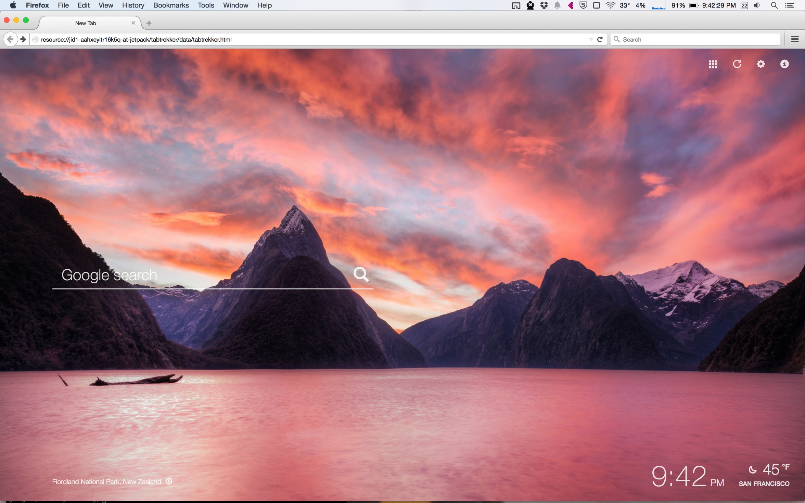
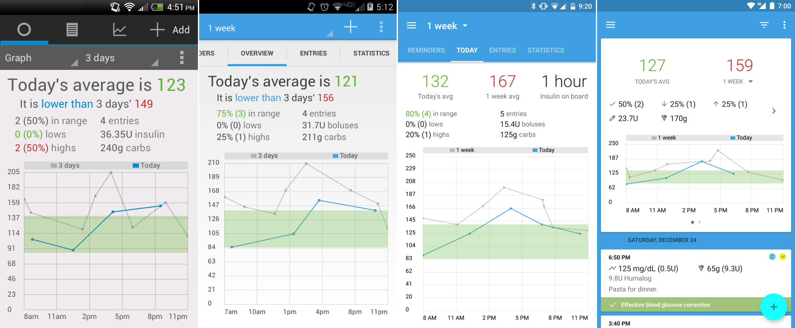
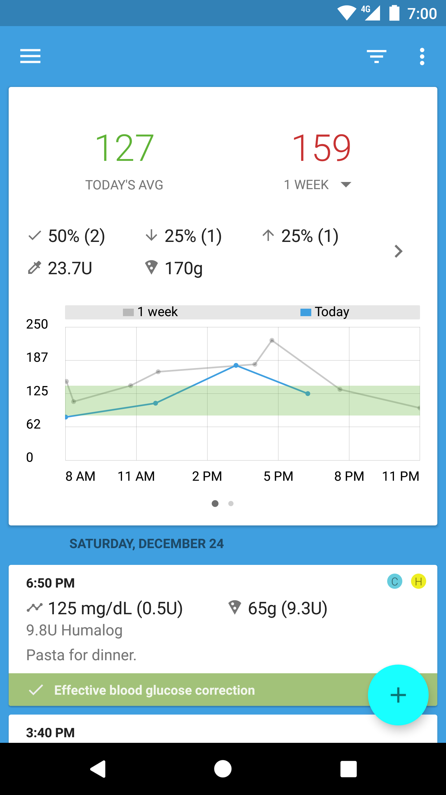
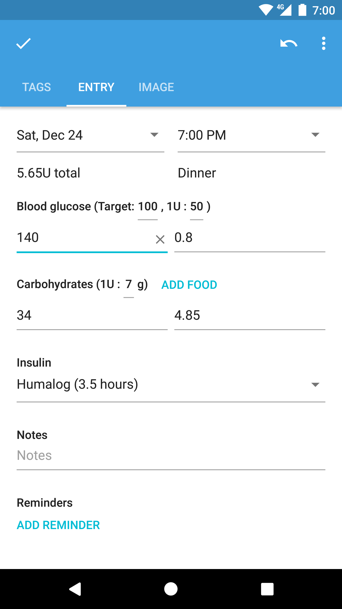
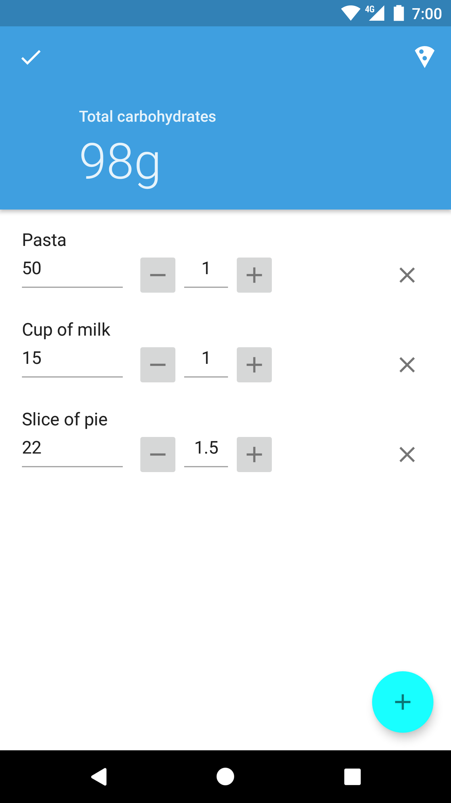
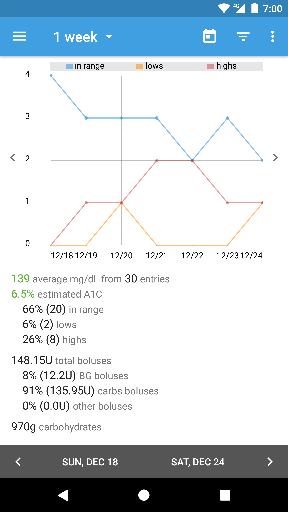
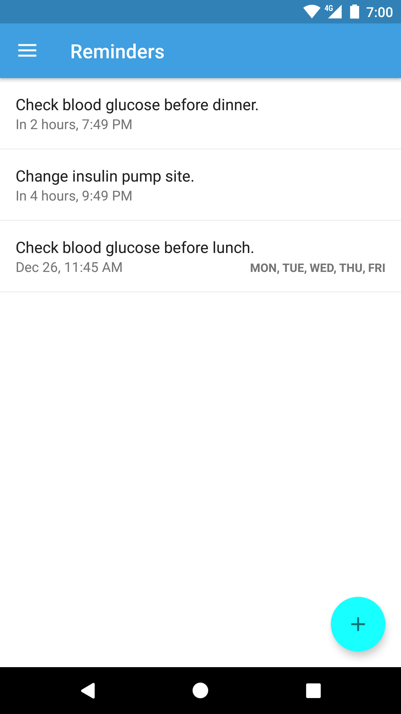

Gordon Wong
Software Engineer

BG Monitor
Android app
Powerful and easy to use diabetes management
Android app
Powerful and easy to use diabetes management

MaterialSheetFab
Android library
Open source implementation of a floating action button to sheet transition
Android library
Open source implementation of a floating action button to sheet transition
MaterialSheetFab Sample
Android sample app
Demonstrates how to use the MaterialSheetFab library and other Material Design components
Android sample app
Demonstrates how to use the MaterialSheetFab library and other Material Design components
MaterialSheetFab
An Android library that implements the floating action button (FAB) to sheet transition from Google's Material Design guidelines.
The library can be easily incorporated into developers' apps and the open source repository also provides a sample app demonstrating how to use the library and integrate with popular Material Design components.
July 2015
An Android library that implements the floating action button (FAB) to sheet transition from Google's Material Design guidelines.
The library can be easily incorporated into developers' apps and the open source repository also provides a sample app demonstrating how to use the library and integrate with popular Material Design components.
Software Engineer at Box
Following a successful internship at Box, I joined the Box Notes team as a full-stack software engineer, working on a secure and collaborative note-taking application powered by Box's enterprise-grade cloud platform.
March 2015
Following a successful internship at Box, I joined the Box Notes team as a full-stack software engineer, working on a secure and collaborative note-taking application powered by Box's enterprise-grade cloud platform.
March 2015
TabTrekker
A Firefox addon that brings stunning images to your new tab page every day. Users can visit sprawling cities, quaint villages, breathtaking nature parks, and scenic landmarks all from their web browser. Try it out today and start exploring the world one tab at a time!
The project is also open source.
February 2015
A Firefox addon that brings stunning images to your new tab page every day. Users can visit sprawling cities, quaint villages, breathtaking nature parks, and scenic landmarks all from their web browser. Try it out today and start exploring the world one tab at a time!
The project is also open source.

Software Engineering Intern at Box

While interning at Box, I learned about the various complexities involved with performing accurate load testing of services and developed an improved load testing framework that aimed to mimic the type of traffic that services received in production. I also developed an internal web application that can be used to index and search for Docker images.
Summer 2014
While interning at Box, I learned about the various complexities involved with performing accurate load testing of services and developed an improved load testing framework that aimed to mimic the type of traffic that services received in production. I also developed an internal web application that can be used to index and search for Docker images.
Summer 2014
Software Engineering Intern at Intuit
As an intern on the mobile payroll team at Intuit, I redesigned the Online Payroll Android app. I worked with designers to develop a markedly improved user experience, making it more intuitive for business owners to pay and manage their employees from their mobile devices. The version 4.4 update was released to hundreds of thousands of users on October 16, 2013.
Summer 2013
As an intern on the mobile payroll team at Intuit, I redesigned the Online Payroll Android app. I worked with designers to develop a markedly improved user experience, making it more intuitive for business owners to pay and manage their employees from their mobile devices. The version 4.4 update was released to hundreds of thousands of users on October 16, 2013.
BG Monitor
In 2011, I decided to start work on BG Monitor after noticing a lack of easy to use diabetes management apps on Android. My unique perspective on diabetes helped me to develop a powerful and easy to use management tool. Since its initial release, I have continued to develop new features and take advantage of the latest additions to the Android platform.
Below is an example of how the app has changed throughout the years from its initial release to the Holo redesign and finally to its current Material Design version.


 September 2012
September 2012
In 2011, I decided to start work on BG Monitor after noticing a lack of easy to use diabetes management apps on Android. My unique perspective on diabetes helped me to develop a powerful and easy to use management tool. Since its initial release, I have continued to develop new features and take advantage of the latest additions to the Android platform.
Below is an example of how the app has changed throughout the years from its initial release to the Holo redesign and finally to its current Material Design version.








Cisco Team Internship

Cisco's networking devices are incredibly energy efficient, but many customers are unaware of that fact when making a purchase. I collaborated with my two fellow interns to create an interactive exhibit demonstrating to potential customers the benefits of Cisco's energy efficient products.
The exhibit showed the amount of money that could be saved by owning Cisco's enterprise networking devices. I designed and implemented the exhibit's touchscreen interface as well as an application that collected and analyzed the power consumption rates of the networking equipment.
Summer 2012
Cisco's networking devices are incredibly energy efficient, but many customers are unaware of that fact when making a purchase. I collaborated with my two fellow interns to create an interactive exhibit demonstrating to potential customers the benefits of Cisco's energy efficient products.
The exhibit showed the amount of money that could be saved by owning Cisco's enterprise networking devices. I designed and implemented the exhibit's touchscreen interface as well as an application that collected and analyzed the power consumption rates of the networking equipment.
Summer 2012
Computer Science Tutor at UC San Diego

As a computer science tutor, I helped fellow students debug and complete their C++ and Java programming assignments. Teaching others helped me gain a deeper understanding of parallel programming, data structures, algorithms, and other key computer science concepts.
Since there were often many students that needed help at any given time, it was important to tutor each student in a timely manner. This taught me how to quickly analyze code written by others and provide concise and useful feedback.
Winter 2012 - Fall 2013
As a computer science tutor, I helped fellow students debug and complete their C++ and Java programming assignments. Teaching others helped me gain a deeper understanding of parallel programming, data structures, algorithms, and other key computer science concepts.
Since there were often many students that needed help at any given time, it was important to tutor each student in a timely manner. This taught me how to quickly analyze code written by others and provide concise and useful feedback.
Winter 2012 - Fall 2013
TabTrekker - 1000 Daily Active Users
January 4, 2016 by Gordon
Over 1000 people are now using TabTrekker, the Firefox addon that lets you visit sprawling cities and scenic landmarks around the world. Download the addon today and start exploring the world one tab at a time!
January 4, 2016 by Gordon
Over 1000 people are now using TabTrekker, the Firefox addon that lets you visit sprawling cities and scenic landmarks around the world. Download the addon today and start exploring the world one tab at a time!
MaterialSheetFab Featured on Android Weekly
August 16, 2015 by Gordon
MaterialSheetFab is featured on this week's issue of Android Weekly, a newsletter that delivers the latest news to the Android development community and also covers popular libraries and tools. The newsletter boasts tens of thousands of readers and it is a huge honor to be featured this week. The issue can be read here.
August 16, 2015 by Gordon
MaterialSheetFab is featured on this week's issue of Android Weekly, a newsletter that delivers the latest news to the Android development community and also covers popular libraries and tools. The newsletter boasts tens of thousands of readers and it is a huge honor to be featured this week. The issue can be read here.
BG Monitor - 25,000 Downloads
August 2, 2015 by Gordon
BG Monitor has been downloaded on over 25,000 Android devices! I never would have imagined that BG Monitor was going to help so many people manage their diabetes when I first started working on the app almost three years ago. I am glad that it has impacted the lives of so many. Learn more about the diabetes management app.
August 2, 2015 by Gordon
BG Monitor has been downloaded on over 25,000 Android devices! I never would have imagined that BG Monitor was going to help so many people manage their diabetes when I first started working on the app almost three years ago. I am glad that it has impacted the lives of so many. Learn more about the diabetes management app.